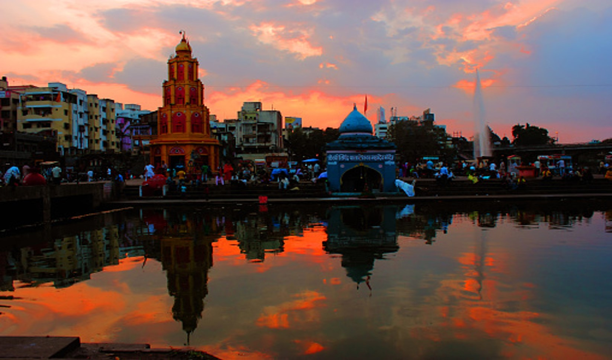
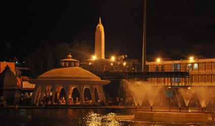
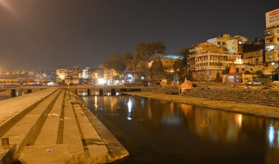

Ramkund is located along the bank of Godavari River. This place is situated at a distance of 2 km from Central Bus stand. This is the holiest spot in Nashik as it is believed to be the place where Lord Rama used to bathe. It contains the bone dissolving Asthivilaya Tirth. It was built by Chitrarao Khatav, a landholder of Khatav in Satara in 1696havrao and was repaired by Gopikabai, the mother of Madhavrao the fourth Peshva. Peoples bring ashes of their deceased relatives and immerse it in Asthivilay kund. Ashes of big personalities like Pandit Nehru, Indira Gandhi, Y B Chavan and others had been immersed at Ramkund.
Timings : No restrictions


